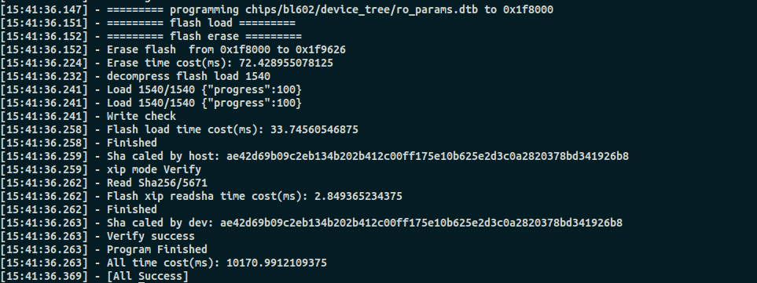

bflb_iot_tool使用方法
在tools/flash_tool目录下有两个可执行文件: bflb_iot_tool和bflb_iot_tool.exe,分别对应linux和windows环境，通过传入不同的参数，我们可以以命令行的形式自定义烧录，具体使用方法如下，以linux环境为例。
参数列表
- --chipname：芯片名字BL602或者BL702 必填
- --interface：默认uart
- --port：com口，默认自动查找，不指定的话默认 端口0
- --baudrate：波特率默认115200
- --xtal：xtal,602默认40M，702默认32M
- --dts：device tree文件(必填,可以为空或者指定文件不存在，如果指定为空或者文件不存在则使用默认dts文件
- --pt：partition table文件(必填，可以为空或者指定文件不存在，如果指定为空或者文件不存在则使用默认d分区文件）
- --firmware：默认img目录下的project.bin ，一般指定为我们要烧录工程的bin
- --build：只生成镜像
- --erase：擦除flash
- --single：单文件烧写
- --addr：烧写地址默认0
- --config：eflash_loader_cfg.ini
- --ota： 指定ota文件生成目录
示例
比如我们要在602平台烧录customer_app/bl602_demo_event/build_out/bl602_demo_event.bin,参数分别如下：
- chipname=BL602
- interface=uart
- port=/dev/ttyUSB0
- boudrate=2000000
- xtal=40M
- dts=customer_app/bl602_demo_event/img_conf/bl_factory_params_IoTKitA_40M.dts
- pt=customer_app/bl602_demo_event/img_conf/partition_cfg_2M.toml
- firmware=customer_app/bl602_demo_event/build_out/bl602_demo_event.bin
以上参数有些默认可以不用指定。
- 执行命令 ./tools/flash_tool/bflb_iot_tool --chipname=BL602 --port=/dev/ttyUSB1 --baudrate=2000000 --dts=customer_app/bl602_demo_event/img_conf/bl_factory_params_IoTKitA_40M.dts --pt=customer_app/bl602_demo_event/img_conf/partition_cfg_2M.toml --firmware=customer_app/bl602_demo_event/build_out/bl602_demo_event.bin, 出现下图所示表明烧录成功。
